Curso de Opciones Binarias con Acción del Precio
En esta sección encontrarás el curso completo de trading para Opciones Binarias, con acción del precio. Es un curso bastante completo, sugiero avanzar con
Curso de Opciones Binarias - Nivel 1
26 clases
- 01
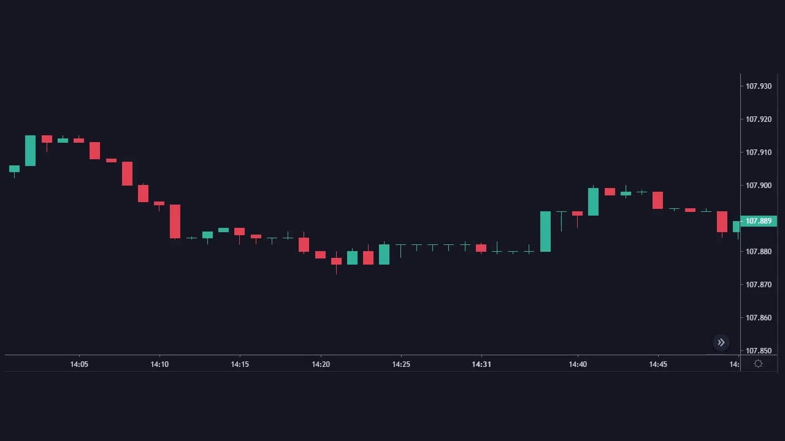
La volatilidad en el Mercado - 02
 Ciclo del Mercado -Tendencias
Ciclo del Mercado -Tendencias - 03
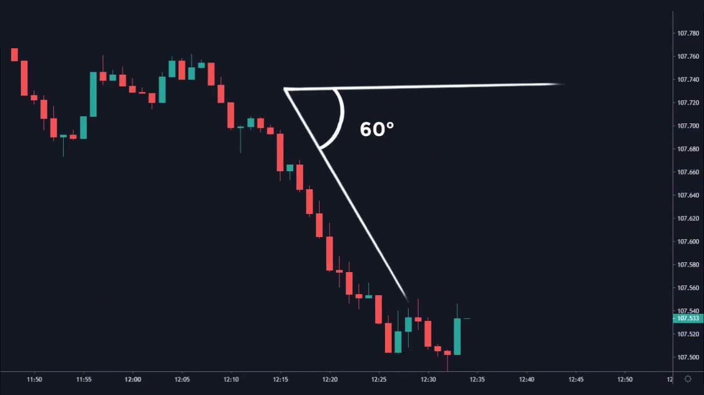
Aceleración de la Tendencia - 04
 Soportes y Resistencias en el Trading
Soportes y Resistencias en el Trading - 05
 Trading con Canales
Trading con Canales - 06
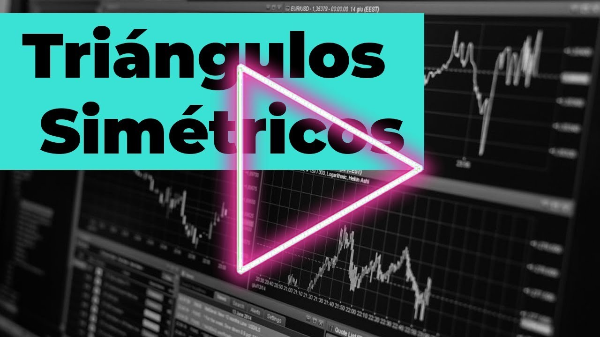
Triángulos Simétricos - 07
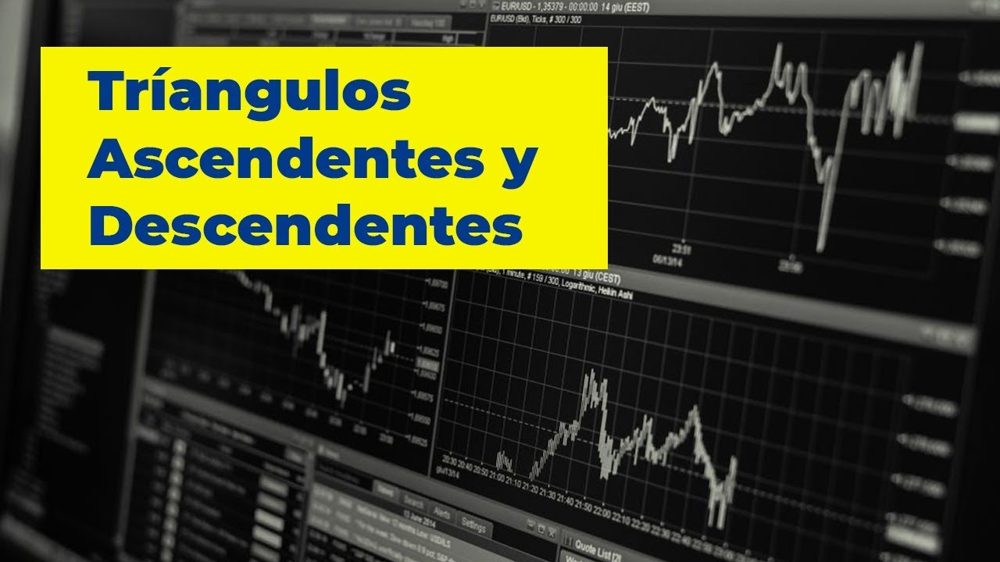
Triángulos Ascendente y Descendente - 08
 Banderas Alcistas y Bajistas
Banderas Alcistas y Bajistas - 09
 Banderín Alcista y Bajista
Banderín Alcista y Bajista - 10
 Cuñas Alcistas y Bajistas
Cuñas Alcistas y Bajistas - 11
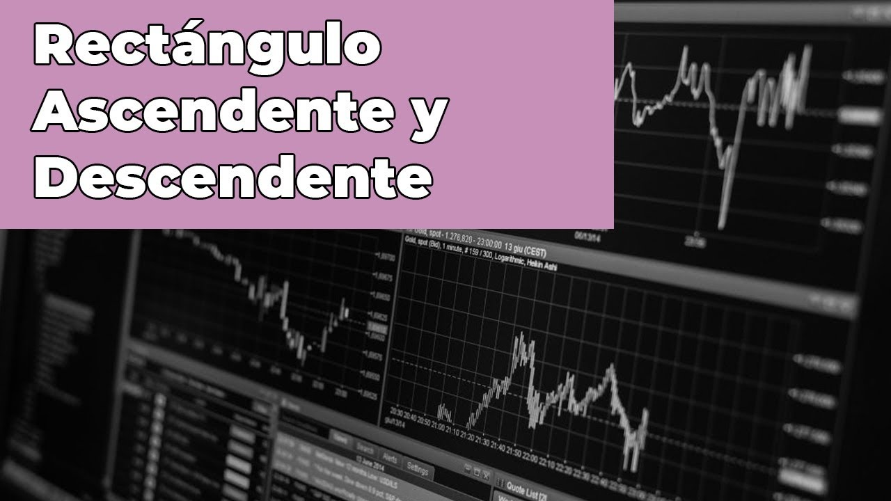
Rectángulo Ascendente y Descendente - 12Doble Techo y Doble Suelo
- 13
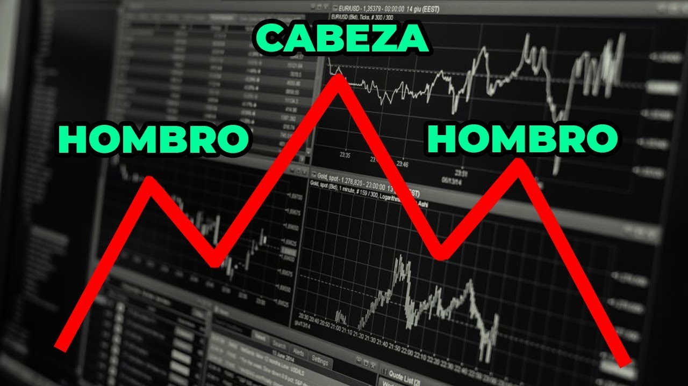
Hombro – Cabeza – Hombro y Hombro – Cabeza – Hombro Invertido - 14
 Introducción a Patrones de Velas Japonesas
Introducción a Patrones de Velas Japonesas - 15
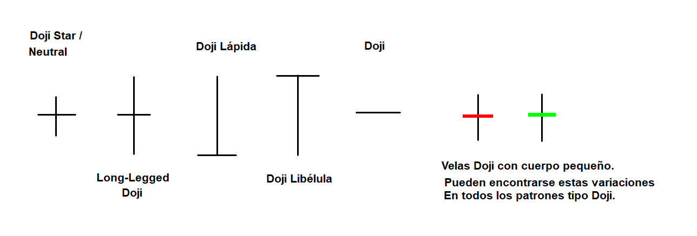
Cómo operar con Doji – Patrones de Velas Japonesas - 16
 ¿Qué es un Doji Libélula y un Doji Lápida?
¿Qué es un Doji Libélula y un Doji Lápida? - 17
 Cómo hacer Trading con el Martillo – Hammer y variaciones
Cómo hacer Trading con el Martillo – Hammer y variaciones - 18Cómo analizar el PinBar
- 19
 Cómo operar con Tweezer Top y Tweezer Bottom
Cómo operar con Tweezer Top y Tweezer Bottom - 20
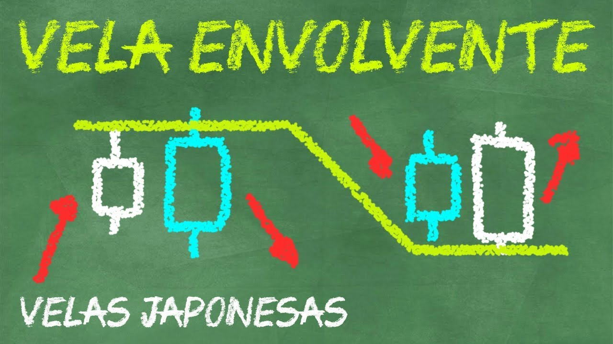
Patrón Envolvente - 21
 Cómo aprovechar una Barra Interna
Cómo aprovechar una Barra Interna - 22
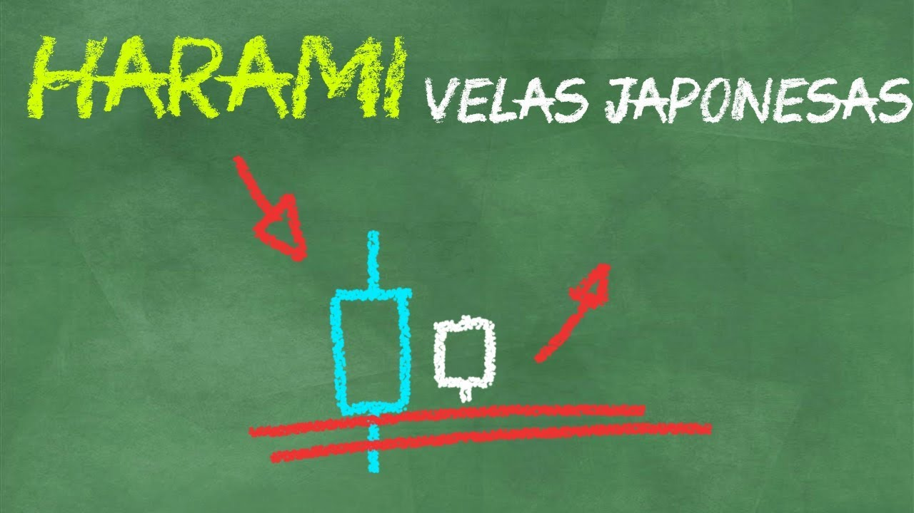
Cómo operar un Harami - 23
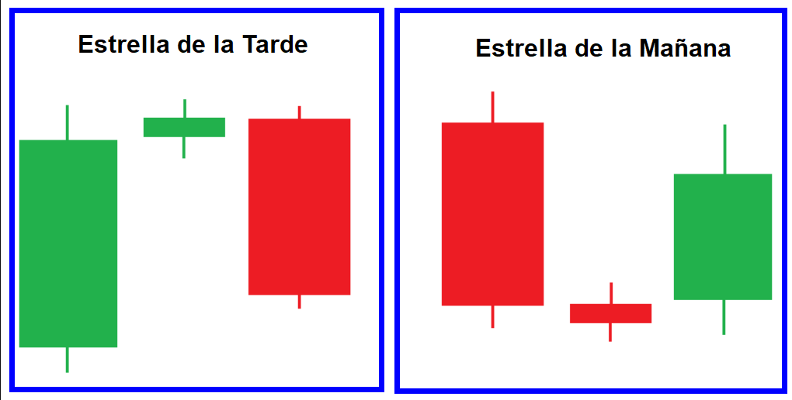
Estrella de la Mañana y Estrella de la Tarde - 24
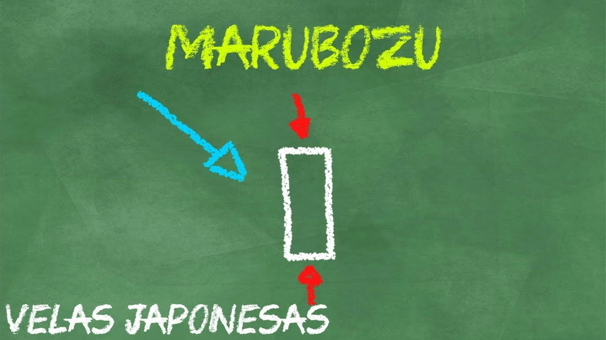
El patrón de vela Marubozu - 25
 Patrones de velas con GAP
Patrones de velas con GAP - 26La Estrategia -Uniendo los conocimientos de trading
Curso de Opciones Binarias -Nivel 2
0 clases · lista de YouTube
- --Esta seccion solo enlaza a una lista de reproduccion externa de YouTube.
Curso de Opciones Binarias -Nivel 3
0 clases · lista de YouTube
- --Esta seccion solo enlaza a una lista de reproduccion externa de YouTube.
Recursos complementarios
Resumen del Curso de Opciones Binarias
Recurso
Diccionario del Curso de Opciones Binarias
Recurso
Mentalidad del Trader Exitoso
Clase del curso
Deja de pensar en el Dinero
Clase del curso
El Gráfico -Entendiendo nuestra área de Trabajo
Clase del curso
Tendencias y Fractales
Clase del curso
Soportes y Resistencias
Clase del curso
Figuras Chartistas
Clase del curso
Patrones de Velas Japonesas
Clase del curso